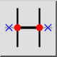

Automātiskā apdare
Rīkjosla / ikona:


Izvēlne: Mainīt > Automātiskā apdare
Īsais ceļvedis: A, X
Komandas: autotrim | ax
Rīkjosla / ikona:


Apgriež vai pagarina vienību abās pusēs līdz nākamajām ierobežojošajām vienībām.